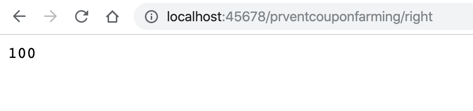

- 00 开篇词 业务代码真的会有这么多坑？.md.html
- 01 使用了并发工具类库，线程安全就高枕无忧了吗？.md.html
- 02 代码加锁：不要让“锁”事成为烦心事.md.html
- 03 线程池：业务代码最常用也最容易犯错的组件.md.html
- 04 连接池：别让连接池帮了倒忙.md.html
- 05 HTTP调用：你考虑到超时、重试、并发了吗？.md.html
- 06 2成的业务代码的Spring声明式事务，可能都没处理正确.md.html
- 07 数据库索引：索引并不是万能药.md.html
- 08 判等问题：程序里如何确定你就是你？.md.html
- 09 数值计算：注意精度、舍入和溢出问题.md.html
- 10 集合类：坑满地的List列表操作.md.html
- 11 空值处理：分不清楚的null和恼人的空指针.md.html
- 12 异常处理：别让自己在出问题的时候变为瞎子.md.html
- 13 日志：日志记录真没你想象的那么简单.md.html
- 14 文件IO：实现高效正确的文件读写并非易事.md.html
- 15 序列化：一来一回你还是原来的你吗？.md.html
- 16 用好Java 8的日期时间类，少踩一些“老三样”的坑.md.html
- 17 别以为“自动挡”就不可能出现OOM.md.html
- 18 当反射、注解和泛型遇到OOP时，会有哪些坑？.md.html
- 19 Spring框架：IoC和AOP是扩展的核心.md.html
- 20 Spring框架：框架帮我们做了很多工作也带来了复杂度.md.html
- 21 代码重复：搞定代码重复的三个绝招.md.html
- 22 接口设计：系统间对话的语言，一定要统一.md.html
- 23 缓存设计：缓存可以锦上添花也可以落井下石.md.html
- 24 业务代码写完，就意味着生产就绪了？.md.html
- 25 异步处理好用，但非常容易用错.md.html
- 26 数据存储：NoSQL与RDBMS如何取长补短、相辅相成？.md.html
- 27 数据源头：任何客户端的东西都不可信任.md.html
- 28 安全兜底：涉及钱时，必须考虑防刷、限量和防重.md.html
- 29 数据和代码：数据就是数据，代码就是代码.md.html
- 30 如何正确保存和传输敏感数据？.md.html
- 31 加餐1：带你吃透课程中Java 8的那些重要知识点（一）.md.html
- 32 加餐2：带你吃透课程中Java 8的那些重要知识点（二）.md.html
- 33 加餐3：定位应用问题，排错套路很重要.md.html
- 34 加餐4：分析定位Java问题，一定要用好这些工具（一）.md.html
- 35 加餐5：分析定位Java问题，一定要用好这些工具（二）.md.html
- 36 加餐6：这15年来，我是如何在工作中学习技术和英语的？.md.html
- 37 加餐7：程序员成长28计.md.html
- 38 加餐8：Java程序从虚拟机迁移到Kubernetes的一些坑.md.html
- 答疑篇：代码篇思考题集锦（一）.md.html
- 答疑篇：代码篇思考题集锦（三）.md.html
- 答疑篇：代码篇思考题集锦（二）.md.html
- 答疑篇：加餐篇思考题答案合集.md.html
- 答疑篇：安全篇思考题答案合集.md.html
- 答疑篇：设计篇思考题答案合集.md.html
- 结束语 写代码时，如何才能尽量避免踩坑？.md.html
28 安全兜底：涉及钱时，必须考虑防刷、限量和防重
你好，我是朱晔。今天，我要和你分享的主题是，任何涉及钱的代码必须要考虑防刷、限量和防重，要做好安全兜底。
涉及钱的代码，主要有以下三类。
第一，代码本身涉及有偿使用的三方服务。如果因为代码本身缺少授权、用量控制而被利用导致大量调用，势必会消耗大量的钱，给公司造成损失。有些三方服务可能采用后付款方式的结算，出现问题后如果没及时发现，下个月结算时就会收到一笔数额巨大的账单。
第二，代码涉及虚拟资产的发放，比如积分、优惠券等。虽然说虚拟资产不直接对应货币，但一般可以在平台兑换具有真实价值的资产。比如，优惠券可以在下单时使用，积分可以兑换积分商城的商品。所以从某种意义上说，虚拟资产就是具有一定价值的钱，但因为不直接涉及钱和外部资金通道，所以容易产生随意性发放而导致漏洞。
第三，代码涉及真实钱的进出。比如，对用户扣款，如果出现非正常的多次重复扣款，小则用户投诉、用户流失，大则被相关管理机构要求停业整改，影响业务。又比如，给用户发放返现的付款功能，如果出现漏洞造成重复付款，涉及 B 端的可能还好，但涉及 C 端用户的重复付款可能永远无法追回。
前段时间拼多多一夜之间被刷了大量 100 元无门槛优惠券的事情，就是限量和防刷出了问题。
今天，我们就通过三个例子，和你说明如何在代码层面做好安全兜底。
开放平台资源的使用需要考虑防刷
我以真实遇到的短信服务被刷案例，和你说说防刷。
有次短信账单月结时发现，之前每个月是几千元的短信费用，这个月突然变为了几万元。查数据库记录发现，之前是每天发送几千条短信验证码，从某天开始突然变为了每天几万条，但注册用户数并没有激增。显然，这是短信接口被刷了。
我们知道，短信验证码服务属于开放性服务，由用户侧触发，且因为是注册验证码所以不需要登录就可以使用。如果我们的发短信接口像这样没有任何防刷的防护，直接调用三方短信通道，就相当于“裸奔”，很容易被短信轰炸平台利用：
@GetMapping("wrong")
public void wrong() {
sendSMSCaptcha("13600000000");
}
private void sendSMSCaptcha(String mobile) {
//调用短信通道
}
对于短信验证码这种开放接口，程序逻辑内需要有防刷逻辑。好的防刷逻辑是，对正常使用的用户毫无影响，只有疑似异常使用的用户才会感受到。对于短信验证码，有如下 4 种可行的方式来防刷。
第一种方式，只有固定的请求头才能发送验证码。
也就是说，我们通过请求头中网页或 App 客户端传给服务端的一些额外参数，来判断请求是不是 App 发起的。其实，这种方式“防君子不防小人”。
比如，判断是否存在浏览器或手机型号、设备分辨率请求头。对于那些使用爬虫来抓取短信接口地址的程序来说，往往只能抓取到 URL，而难以分析出请求发送短信还需要的额外请求头，可以看作第一道基本防御。
第二种方式，只有先到过注册页面才能发送验证码。
对于普通用户来说，不管是通过 App 注册还是 H5 页面注册，一定是先进入注册页面才能看到发送验证码按钮，再点击发送。我们可以在页面或界面打开时请求固定的前置接口，为这个设备开启允许发送验证码的窗口，之后的请求发送验证码才是有效请求。
这种方式可以防御直接绕开固定流程，通过接口直接调用的发送验证码请求，并不会干扰普通用户。
第三种方式，控制相同手机号的发送次数和发送频次。
除非是短信无法收到，否则用户不太会请求了验证码后不完成注册流程，再重新请求。因此，我们可以限制同一手机号每天的最大请求次数。验证码的到达需要时间，太短的发送间隔没有意义，所以我们还可以控制发送的最短间隔。比如，我们可以控制相同手机号一天只能发送 10 次验证码，最短发送间隔 1 分钟。
第四种方式，增加前置图形验证码。
短信轰炸平台一般会收集很多免费短信接口，一个接口只会给一个用户发一次短信，所以控制相同手机号发送次数和间隔的方式不够有效。这时，我们可以考虑对用户体验稍微有影响，但也是最有效的方式作为保底，即将弹出图形验证码作为前置。
除了图形验证码，我们还可以使用其他更友好的人机验证手段（比如滑动、点击验证码等），甚至是引入比较新潮的无感知验证码方案（比如，通过判断用户输入手机号的打字节奏，来判断是用户还是机器），来改善用户体验。
此外，我们也可以考虑在监测到异常的情况下再弹出人机检测。比如，短时间内大量相同远端 IP 发送验证码的时候，才会触发人机检测。
总之，我们要确保，只有正常用户经过正常的流程才能使用开放平台资源，并且资源的用量在业务需求合理范围内。此外，还需要考虑做好短信发送量的实时监控，遇到发送量激增要及时报警。
接下来，我们一起看看限量的问题。
虚拟资产并不能凭空产生无限使用
虚拟资产虽然是平台方自己生产和控制，但如果生产出来可以立即使用就有立即变现的可能性。比如，因为平台 Bug 有大量用户领取高额优惠券，并立即下单使用。
在商家看来，这很可能只是一个用户支付的订单，并不会感知到用户使用平台方优惠券的情况；同时，因为平台和商家是事后结算的，所以会马上安排发货。而发货后基本就不可逆了，一夜之间造成了大量资金损失。
我们从代码层面模拟一个优惠券被刷的例子。
假设有一个 CouponCenter 类负责优惠券的产生和发放。如下是错误做法，只要调用方需要，就可以凭空产生无限的优惠券：
@Slf4j
public class CouponCenter {
//用于统计发了多少优惠券
AtomicInteger totalSent = new AtomicInteger(0);
public void sendCoupon(Coupon coupon) {
if (coupon != null)
totalSent.incrementAndGet();
}
public int getTotalSentCoupon() {
return totalSent.get();
}
//没有任何限制，来多少请求生成多少优惠券
public Coupon generateCouponWrong(long userId, BigDecimal amount) {
return new Coupon(userId, amount);
}
}
这样一来，使用 CouponCenter 的 generateCouponWrong 方法，想发多少优惠券就可以发多少：
@GetMapping("wrong")
public int wrong() {
CouponCenter couponCenter = new CouponCenter();
//发送10000个优惠券
IntStream.rangeClosed(1, 10000).forEach(i -> {
Coupon coupon = couponCenter.generateCouponWrong(1L, new BigDecimal("100"));
couponCenter.sendCoupon(coupon);
});
return couponCenter.getTotalSentCoupon();
}
更合适的做法是，把优惠券看作一种资源，其生产不是凭空的，而是需要事先申请，理由是：
虚拟资产如果最终可以对应到真实金钱上的优惠，那么，能发多少取决于运营和财务的核算，应该是有计划、有上限的。引言提到的无门槛优惠券，需要特别小心。有门槛优惠券的大量使用至少会带来大量真实的消费，而使用无门槛优惠券下的订单，可能用户一分钱都没有支付。
即使虚拟资产不值钱，大量不合常规的虚拟资产流入市场，也会冲垮虚拟资产的经济体系，造成虚拟货币的极速贬值。有量的控制才有价值。
资产的申请需要理由，甚至需要走流程，这样才可以追溯是什么活动需要、谁提出的申请，程序依据申请批次来发放。
接下来，我们按照这个思路改进一下程序。
首先，定义一个 CouponBatch 类，要产生优惠券必须先向运营申请优惠券批次，批次中包含了固定张数的优惠券、申请原因等信息：
//优惠券批次
@Data
public class CouponBatch {
private long id;
private AtomicInteger totalCount;
private AtomicInteger remainCount;
private BigDecimal amount;
private String reason;
}
在业务需要发放优惠券的时候，先申请批次，然后再通过批次发放优惠券：
@GetMapping("right")
public int right() {
CouponCenter couponCenter = new CouponCenter();
//申请批次
CouponBatch couponBatch = couponCenter.generateCouponBatch();
IntStream.rangeClosed(1, 10000).forEach(i -> {
Coupon coupon = couponCenter.generateCouponRight(1L, couponBatch);
//发放优惠券
couponCenter.sendCoupon(coupon);
});
return couponCenter.getTotalSentCoupon();
}
可以看到，generateCouponBatch 方法申请批次时，设定了这个批次包含 100 张优惠券。在通过 generateCouponRight 方法发放优惠券时，每发一次都会从批次中扣除一张优惠券，发完了就没有了：
public Coupon generateCouponRight(long userId, CouponBatch couponBatch) {
if (couponBatch.getRemainCount().decrementAndGet() >= 0) {
return new Coupon(userId, couponBatch.getAmount());
} else {
log.info("优惠券批次 {} 剩余优惠券不足", couponBatch.getId());
return null;
}
}
public CouponBatch generateCouponBatch() {
CouponBatch couponBatch = new CouponBatch();
couponBatch.setAmount(new BigDecimal("100"));
couponBatch.setId(1L);
couponBatch.setTotalCount(new AtomicInteger(100));
couponBatch.setRemainCount(couponBatch.getTotalCount());
couponBatch.setReason("XXX活动");
return couponBatch;
}
这样改进后的程序，一个批次最多只能发放 100 张优惠券：

因为是 Demo，所以我们只是凭空 new 出来一个 Coupon。在真实的生产级代码中，一定是根据 CouponBatch 在数据库中插入一定量的 Coupon 记录，每一个优惠券都有唯一的 ID，可跟踪、可注销。
最后，我们再看看防重。
钱的进出一定要和订单挂钩并且实现幂等
涉及钱的进出，需要做好以下两点。
第一，任何资金操作都需要在平台侧生成业务属性的订单，可以是优惠券发放订单，可以是返现订单，也可以是借款订单，一定是先有订单再去做资金操作。同时，订单的产生需要有业务属性。业务属性是指，订单不是凭空产生的，否则就没有控制的意义。比如，返现发放订单必须关联到原先的商品订单产生；再比如，借款订单必须关联到同一个借款合同产生。
第二，一定要做好防重，也就是实现幂等处理，并且幂等处理必须是全链路的。这里的全链路是指，从前到后都需要有相同的业务订单号来贯穿，实现最终的支付防重。
关于这两点，你可以参考下面的代码示例：
//错误：每次使用UUID作为订单号
@GetMapping("wrong")
public void wrong(@RequestParam("orderId") String orderId) {
PayChannel.pay(UUID.randomUUID().toString(), "123", new BigDecimal("100"));
}
//正确：使用相同的业务订单号
@GetMapping("right")
public void right(@RequestParam("orderId") String orderId) {
PayChannel.pay(orderId, "123", new BigDecimal("100"));
}
//三方支付通道
public class PayChannel {
public static void pay(String orderId, String account, BigDecimal amount) {
...
}
}
对于支付操作，我们一定是调用三方支付公司的接口或银行接口进行处理的。一般而言，这些接口都会有商户订单号的概念，对于相同的商户订单号，无法进行重复的资金处理，所以三方公司的接口可以实现唯一订单号的幂等处理。
但是，业务系统在实现资金操作时容易犯的错是，没有自始至终地使用一个订单号作为商户订单号，透传给三方支付接口。出现这个问题的原因是，比较大的互联网公司一般会把支付独立一个部门。支付部门可能会针对支付做聚合操作，内部会维护一个支付订单号，然后使用支付订单号和三方支付接口交互。最终虽然商品订单是一个，但支付订单是多个，相同的商品订单因为产生多个支付订单导致多次支付。
如果说，支付出现了重复扣款，我们可以给用户进行退款操作，但给用户付款的操作一旦出现重复付款，就很难把钱追回来了，所以更要小心。
这，就是全链路的意义，从一开始就需要先有业务订单产生，然后使用相同的业务订单号一直贯穿到最后的资金通路，才能真正避免重复资金操作。
重点回顾
今天，我从安全兜底聊起，和你分享了涉及钱的业务最需要做的三方面工作，防刷、限量和防重。
第一，使用开放的、面向用户的平台资源要考虑防刷，主要包括正常使用流程识别、人机识别、单人限量和全局限量等手段。
第二，虚拟资产不能凭空产生，一定是先有发放计划、申请批次，然后通过批次来生产资产。这样才能达到限量、有审计、能追溯的目的。
第三，真实钱的进出操作要额外小心，做好防重处理。不能凭空去操作用户的账户，每次操作以真实的订单作为依据，通过业务订单号实现全链路的幂等控制。
如果程序逻辑涉及有价值的资源或是真实的钱，我们必须有敬畏之心。程序上线后，人是有休息时间的，但程序是一直运行着的，如果产生安全漏洞，就很可能在一夜之间爆发，被大量人利用导致大量的金钱损失。
除了在流程上做好防刷、限量和防重控制之外，我们还需要做好三方平台调用量、虚拟资产使用量、交易量、交易金额等重要数据的监控报警，这样即使出现问题也能第一时间发现。
今天用到的代码，我都放在了 GitHub 上，你可以点击这个链接查看。
思考与讨论
防重、防刷都是事前手段，如果我们的系统正在被攻击或利用，你有什么办法及时发现问题吗？
任何三方资源的使用一般都会定期对账，如果在对账中发现我们系统记录的调用量低于对方系统记录的使用量，你觉得一般是什么问题引起的呢？
有关安全兜底，你还有什么心得吗？我是朱晔，欢迎在评论区与我留言分享你的想法，也欢迎你把今天的内容分享给你的朋友或同事，一起交流。